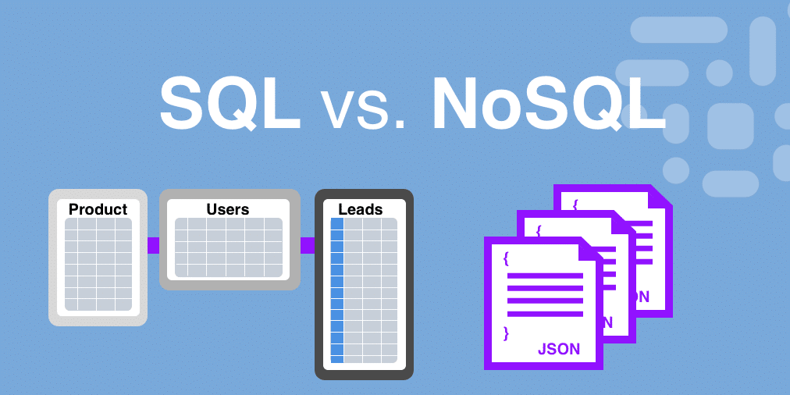
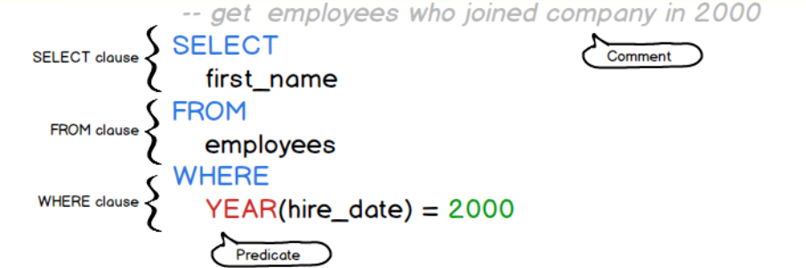
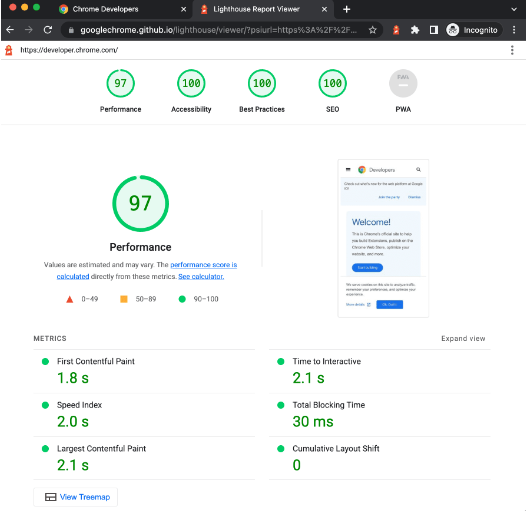
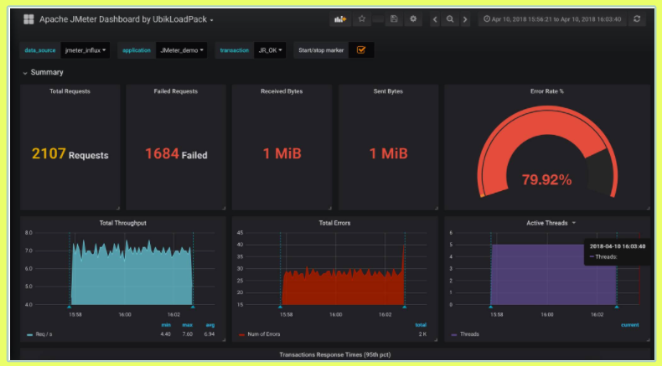

Son cifras, letras, palabras o cualquier otro tipo de formato que se
ingresa en una computadora para posteriormente ser procesada y utilizarla
como información para tomar decisiones.
¿Qué es una base de dato?
Las bases de datos son almacenes de datos para su uso futuro. Pueden ser
Relacionales o No-Relacionales, dependiendo de cómo se organicen los
datos.

Base de datos (BBDD) Relacionales:
Las BBDD Relacionales estructuran la información en tablas con relaciones
definidas, como Excel. Por Ejemplo: una BBDD Relacional podría ser una
lista de clientes en una tabla. Suelen ser llamadas BBDD SQL.
Ejemplo de consulta SQL

Base de datos (BBDD) No-Relacionales:
Las BBDD No-Relacionales no tienen estructuras fijas y se adaptan a datos
variados, como documentos. Por Ejemplo: una BBDD No-Relacional podría
almacenar documentos con información detallada de cada cliente. Suelen ser
llamadas BBDD No-SQL.
SQL (Structured Query Language) :
Es un lenguaje de programación utilizado para gestionar y manipular bases
de datos relacionales. Se utiliza para realizar diversas operaciones como
consultar información, insertar nuevos datos, actualizar registros
existentes y eliminar datos. Este lenguaje es utilizado por las BBDD
Relacionales.
Base de Datos Relacionales o SQL
Vs
Base de Datos No Relacionales o NO-SQL
la verificación de datos:
La verificación de datos es un proceso que se utiliza para asegurarse de
que la información sea precisa, completa y consistente. Es como revisar y
confirmar que los datos estén correctos y no haya errores. En este proceso
juega un papel fundamental los motores o gestores de bases de datos, ya
que proporcionan herramientas y funcionalidades para asegurar la precisión
y la integridad de la información almacenada.
Pruebas de estrés
tienen como objetivo evaluar la estabilidad y el rendimiento del sistema
bajo condiciones extremas de carga. Esto implica someter al sistema a
una carga intensiva para determinar su capacidad máxima de manejar un
gran número de usuarios o transacciones simultáneas.
Tipo de pruebas de estres
LOAD TESTING (prueba de carga): Se utiliza para evaluar el
comportamiento del sistema bajo condiciones de carga normal o
esperada
STRESS TESTING (prueba de estres): Se enfoca en evaluar el
comportamiento del sistema cuando se somete a condiciones extremas
o por encima de la capacidad normal de carga.
ENDURANCE TESTING (prueba de Resistencia): Se centra en evaluar el
comportamiento del sistema durante un período prolongado de tiempo
bajo carga constante.
SCALABILITY TESTING (Pruebas de Escalabilidad): Se utiliza para
evaluar cómo el sistema responde al aumentar la carga, tanto
verticalmente (agregando más recursos a un servidor) como
horizontalmente (agregando más servidores).
Herramientas de Prueba de estres:

Fighthouse extension de chrome para hacer
pruebas de estrés.

JMeter es más conocida para las pruebas de
estrés.
Las pruebas de seguridad:
Son un tipo de evaluación que se realiza para identificar
vulnerabilidades en un sistema de software y garantizar que esté
protegido contra amenazas externas. Estas pruebas implican la
identificación y análisis de posibles riesgos de seguridad, como brechas
de datos, accesos no autorizados, fallos en la autenticación, entre
otros. El objetivo principal es detectar y corregir posibles puntos
débiles en el sistema antes de que sean explotados por hackers o causen
daños significativos.
Vulnerabilidades:
Son todas las brechas de seguridad en un aplicación desde donde alguien
puede aprovecharse para romper la aplicación o hacer algún robo de
información. Estas son:
Autentificación: Consiste en la verificación de la
identidad de un usuario que tiene permisos para acceder a la
aplicación. Los atacantes usualmente buscan quebrantar cualquier
mecanismo de autenticación que se les presente con el fin de ingresar
a la información que requieren.
Sesiones: Es un aspecto importante en la seguridad de
información, puesto que estas necesitan mantener el estado de las
peticiones del cliente y a partir de las sesiones se pueden asociar
entre sí
Validación de datos: Se refiere a la verificación de
datos de entrada permitidos dentro de la aplicación, y es una de las
debilidades más frecuentes en las aplicaciones web.
Límites de seguridad en testing: La seguridad en un
desarrollo de aplicación deberá ser nuestra responsabilidad, pero hay
que saber que el límite termina en el código y su funcionamiento.
Pruebas automatizadas
La automatización es una herramienta que le permite al QA adelantar
tiempos de pruebas ya hechos, a través de la programación de
comportamiento de la aplicación.
Falsos conceptos:
¿Se puede automatizar todo?:
- ¡No! Sabemos que una aplicación no se puede probar a fondo nunca.
Por ende, tampoco automatizar todo.
Las pruebas automatizadas son demasiado costosas:
- Si y no. En una primera instancia, la inversión es alta, pero el
mismo con el tiempo se beneficia y su costo baja mucho.
Las pruebas automáticas son fáciles:
- ¡No!, A pesar de que existan herramientas que hagan la labor más
sencilla, automatizar es una de las partes más complejas del ciclo de
desarrollo.
Automatización reemplazará a pruebas manuales:
- No. Es el error más grande de todos. La automatización ayuda a lo
manual, pero nunca podrá reemplazarlo.
tipos de pruebas automatizadas:
A grande escala, existen tres tipos de automatizaciones:
Las pruebas unitarias. son realizadas por programadores. Estas pruebas
se escriben para probar el nivel de código.Existen numerosos
frameworks para la automatización de pruebas unitarias. Algunos de los
más conocidos son NUnit, Junit, Unit, js, QUnit, etc.
Las pruebas de API. se prueban la funcionalidad, el cumplimiento y los
problemas de seguridad, y si está probando una aplicación web, también
se examina la seguridad de Solicitud y Respuesta ej: LambdaTest
Las pruebas de interfaz gráfica. suplantan las mismas acciones que los
usuarios realizan con su mouse y teclado en la interfaz de usuario.
ej: Selenium
otras herramientas: Appium para automatizar pruebas mobile, o
Functionize o SeleniumIDE que permiten automatizar webs sin la
necesidad de saber código para hacerlo.